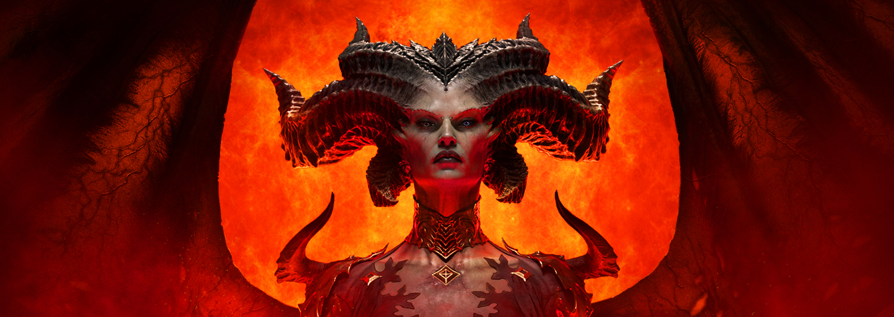

Diablo IV es un videojuego de rol de acción, desarrollado y publicado por Blizzard Entertainment y es la cuarta entrega principal de la serie Diablo. El videojuego se anunció en la BlizzCon de 2019 y se lanzó el 5 de junio de 2023, con un acceso anticipado a partir del 1 de junio. Las versiones beta públicas fueron lanzadas en marzo de 2023. Regresaron algunas características de la serie, como mazmorras reproducibles generadas por procedimientos y la creación de personajes centrada en el botín, mientras que se incorporaron nuevas características como un mundo abierto e interacciones de jugador contra jugador (PVP).Los jugadores crean su personaje a partir de una de las cinco clases jugables (bárbaro, druida, nigromante, pícaro/renegada y hechicero) y los guían a través de misiones y combates en el mundo de Santuario después de la resurrección del demonio Lilith.
Jugabilidad:
Se han anunciado cinco clases: hechicera, bárbaro, druida, nigromante y pícara. La clase Druida puede transformarse en lobos y osos. Puede conjurar aliados animales y utilizar fenómenos naturales como los tornados. La Hechicera emplea las tres escuelas de magia elemental que se eran usadas por el tipo de personaje en Diablo II: fuego, electricidad y frío. Los bárbaros están diseñados en torno al uso de armamento. Existen árboles de habilidades que permitirán la personalización de habilidades. El juego no se podrá jugar sin conexión y requerirá una conexión a Internet. Además de esto, el juego posee un mundo compartido tipo MMO. Las dificultades se eliminaran debido a esto, aunque permanecerá un modo Hardcore. De manera similar al World of Warcraft de Blizzard, las mazmorras se ejecutan en solitario o en grupos. Los jugadores pueden elegir el nivel de dificultad de estas mazmorras. El combate jugador contra jugador es posible en el mundo del juego, y varias zonas son áreas dedicadas a esto. La población de jugadores en el mundo cambiará dependiendo del área. Los grandes asentamientos mostrarán grandes poblaciones, mientras que para imponer una sensación de desolación, más zonas salvajes cambiarán la cantidad de jugadores que se muestran a los demás. Será un mundo abierto y habrá monturas disponibles para viajar. Las monturas también pueden usar equipos que alteren su funcionalidad y participativo en combates. El terreno seá tridimensional y puede interactuar y destruirse, como las rocas escalables. El mundo escalará al nivel de jugador, pero algunas áreas están diseñadas para ser más desafiantes. Las áreas del juego, como las mazmorras, se generarán por procedimiento como en los juegos anteriores de Diablo. Si bien Diablo III introdujo diferentes géneros para las clases, Diablo IV permitirá una personalización más amplia de la apariencia del jugador, como elegir un retrato de personaje o el color de la piel de su personaje. La apariencia del soporte también se puede personalizar.
Desarrollo:
El videojuego se anunció oficialmente en el evento de la BlizzCon 2019 el 1 de noviembre del año 2019. La fecha de lanzamiento no ha sido anunciada formalmente por Blizzard Entertainment, sin embargo, se ha confirmado que el juego no será lanzado en el 2022. Ejecutivos de Blizzard declararon que la experiencia de juego en Diablo IV requeriría conexión estable a Internet para desarrollar toda la parte jugable en la trama principal y los modos de juego centrales.